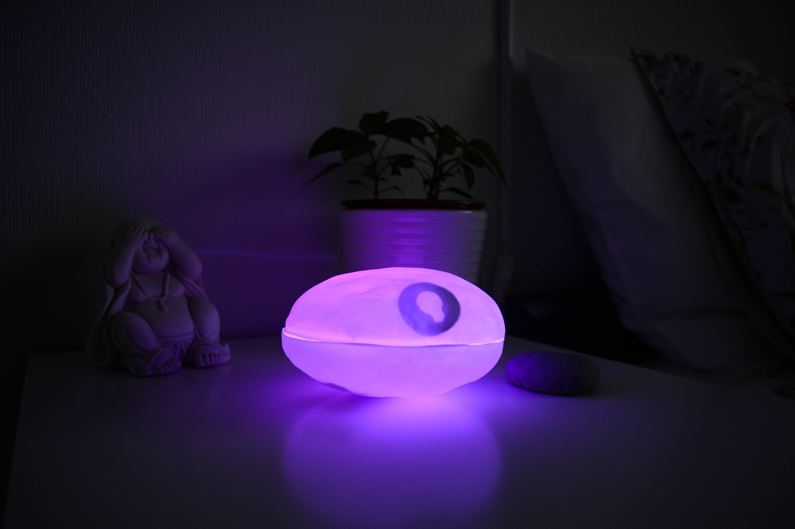
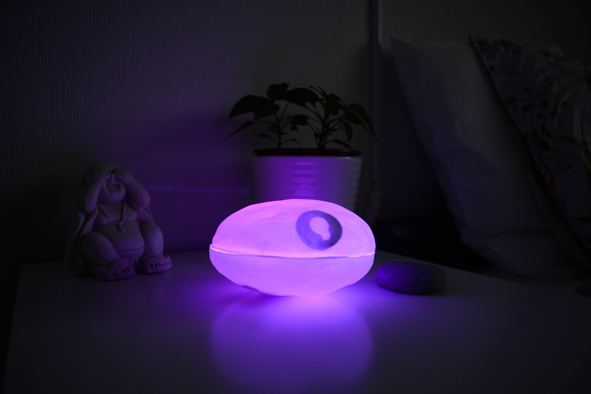
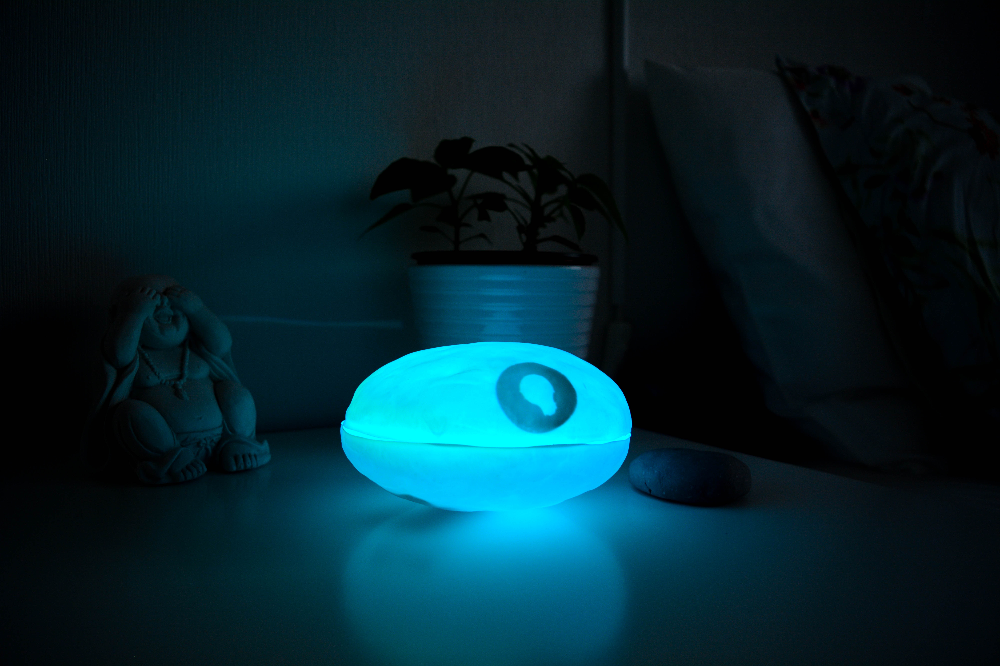
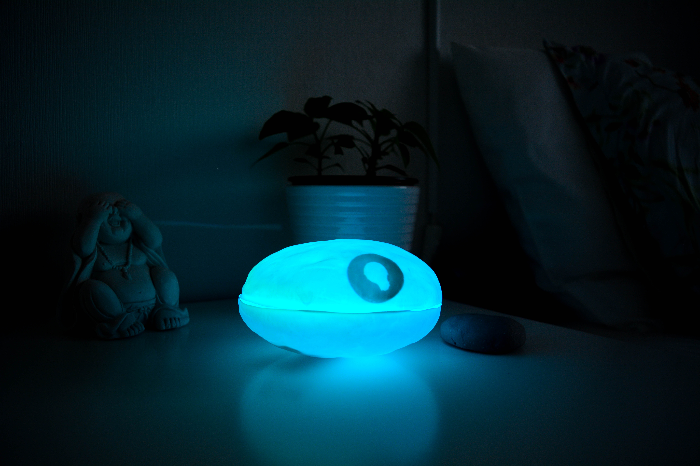

Zzen
De Zzen is een fysiek interactief product ontworpen bij de Sleepcare app. Het idee is dat het een nachtlamp is in de vorm van een zen-steen, die in verbinding staat met je hele slaapkamer. Zo kun je bijvoorbeeld de luchtvochtigheid en de temperatuur regelen, en fungeerd hij ook als wekker. Dit project was in samenwerking met Pim Goedegebuure, Linda Ho en Dorus Bos.
 

 
